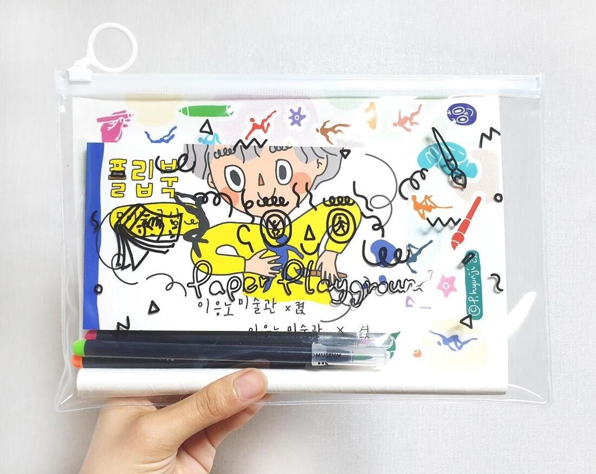
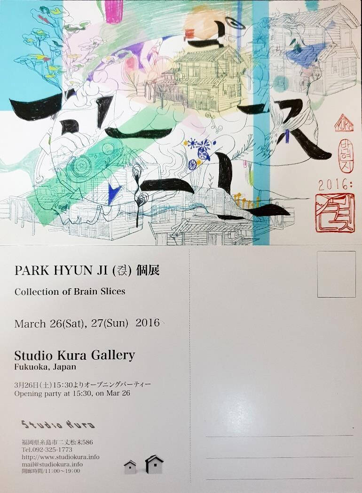

박 현 지 · PARK HYUN JI · 켡

오랜 시간 '나'를 주제로 작업해 오며, 나를 이해하기 위해서는 내가 살아가는 '동네' 또한 함께 바라보아야 한다는 생각에 이르렀다. 그렇게 시작된 '시장'에 대한 작업은 시간의 흐름 속에서 점차 다양한 형식과 의미로 확장되어 왔다.
나는 전통시장을 단순한 경제적 공간이 아닌, 서로 다른 삶과 문화, 세대가 자연스럽게 교차하며 공존하는 문화적 장으로 바라본다. 시장에는 각기 다른 배경과 리듬을 지닌 사람들이 모여들고, 그 차이들은 충돌하기보다 하나의 풍경으로 겹쳐진다. 이 작업은 이러한 문화다양성이 특별한 사건이 아니라, 이미 일상 속에 스며든 상태임을 보여주고자 한다.
나의 작업은 움직이지 않는 캔버스 이미지와 그 위에 투사되는 움직이는 애니메이션 이미지의 결합, 혹은 단일 애니메이션으로 구성된다. 고정된 이미지와 유동적인 이미지가 하나의 화면 안에서 공존하며, 이는 멈춰 있는 듯 보이지만 끊임없이 변화하는 시장의 시간성과 생동을 드러낸다. 나에게 애니메이션은 순간과 흐름을 담아내는, 시간을 기록하는 매체이다.
Having long worked with 'myself' as a subject, I came to see that understanding who I am also means looking at the neighborhood I live in — and so began my work on traditional markets. I see the market not merely as an economic space, but as a cultural ground where different lives, cultures, and generations naturally intersect and coexist. My work combines still images on canvas with moving animated images projected over them; the fixed and the fluid share one scene, revealing the market's quiet, constant motion. For me, animation is a medium that records time — both the moment and the flow.





